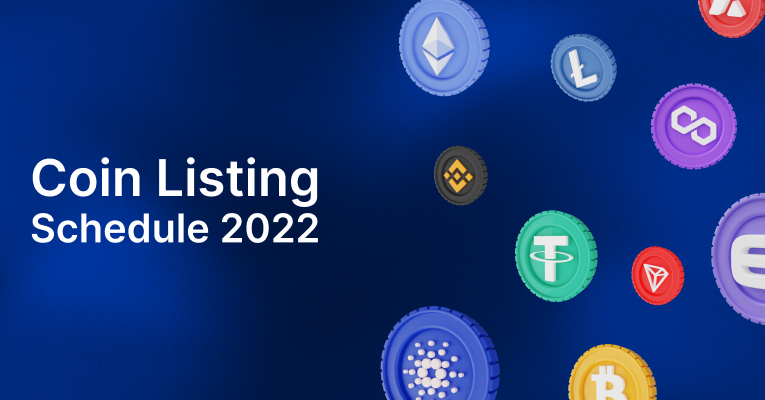

How domain.site Choses Coins To List
Token listing is a very serious process that requires a serious approach. In our domain.site team, there are specialists who are engaged in the selection of tokens that should be presented on our exchange. Let's take a closer look at this process.
Assessment token of the project
domain.site has mandatory requirements for the organization's token that must be met. Here are some of them:
- go through the initial domain.site review
- have technical value and / or real applicationv
- pass our risk assessment
- timely send updates to our team
- get tested with DeepIt or Certik code
Basic token listing procedure
Token listing is a fairly thorough process that we are responsible for:
- passing the initial token verification, after which we contact the organization by email
- sending the listing conditions on domain.site to the project team via email
- the project team must complete and sign the application form and the letter of commitment to confirm acceptance
- we pay for the transfer of tokens
- add the token to the list for trading on domain.site
The listing procedure is the process of verifying compliance with all the conditions and requirements of an organization's token. Only in full compliance with all the above points, our team allows the token to be listed on the exchange.
Token delist rules at domain.site
The exchange also reserves the right to exclude the token from the listing. How does this happen:
- dissolution of the official team at the time of listing
- the appearance of technical problems affecting trade
- increase in token supply and / or malicious trading on the domain.site platform
- request stop marketing due to strategic adjustment and the need for development
- a fall in the weekly transaction volume below 100 thousand US dollars and / or limited deposits remaining on the domain.site cryptocurrency exchange
- failure to provide us with weekly / monthly reports at domain.site .zendesk.com and more